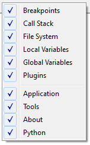

Basic ITOM-GUI¶
Content:
After starting the software the GUI looks like in the following figure.
The GUI consists of the iTOM main frame and several so called Toolboxes. In the middle of the main window is the console, which can be used to type basic commands. The iTOM software and therefore also this console is based on python. So it’s possible to use the standard python commands.
In the following the several components of the GUI are explained.

Figure: iTOM Main Window
Toolboxes¶
It is possible to (un)dock the Toolboxes to the main frame at different positions. This is done by simple drag and drop of the titel bar of the toolboxes. Another way of (un)docking can be realized by double-clicking on the title bar.
At the startup of the iTOM software all 5 Toolboxes are activated, which are:
By right clicking on the main frame the toolboxes can be (de)activated.

Figure: Toolboxmenu
Console¶
Besides the toolboxes there is the main console, which is based on Python. The “>>” signs indicate that the console is ready for an input. Instead of typing all the commands in the console it’s also possible to write python scripts in the Editor.
Main Buttons¶
At the startup of the software there are 4 buttons in the toolbar , whose functions are explained in the table below.
| Symbol | Name (Shortcut) | Description |
|---|---|---|
 |
New (CRTL+N) | Opens a new Python script in the Editor |
 |
Open (CRTL+O) | Opens a saved Python script in the Editor |
 |
Qt Designer | Opens the Qt Designer, see qtdesigner |
| Help (F1) | Opens this documentation | |
 |
Run ... debug | Toggle run GUI-embedded scripts in debug |
It is also possible to add Buttons to the iTOM GUI by the python commands. See